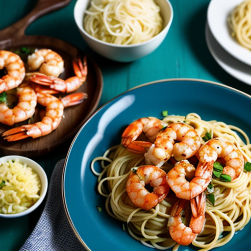

Garlic Butter Shrimp Pasta Recipe

A quick and flavorful pasta dish with shrimp sautéed in a rich garlic butter sauce.
This Garlic Butter Shrimp Pasta is an easy and delicious dish featuring tender shrimp sautéed in a garlicky butter sauce, tossed with pasta, and finished with fresh herbs and Parmesan cheese.
Ingredients
- 8 oz spaghetti or linguine
- 1 lb shrimp, peeled and deveined
- 3 tbsp butter
- 4 cloves garlic, minced
- ½ tsp red pepper flakes (optional)
- ½ cup chicken broth
- Juice of 1 lemon
- Salt and black pepper, to taste
- ¼ cup grated Parmesan cheese
- 2 tbsp chopped fresh parsley
Instructions
- Cook pasta according to package instructions. Drain and set aside.
- In a large pan, melt butter over medium heat. Add garlic and red pepper flakes, sauté for 30 seconds.
- Add shrimp, season with salt and pepper, and cook for 2-3 minutes per side until pink.
- Pour in chicken broth and lemon juice, stirring to combine.
- Add cooked pasta, tossing to coat in the sauce.
- Sprinkle Parmesan and parsley on top before serving.
Home